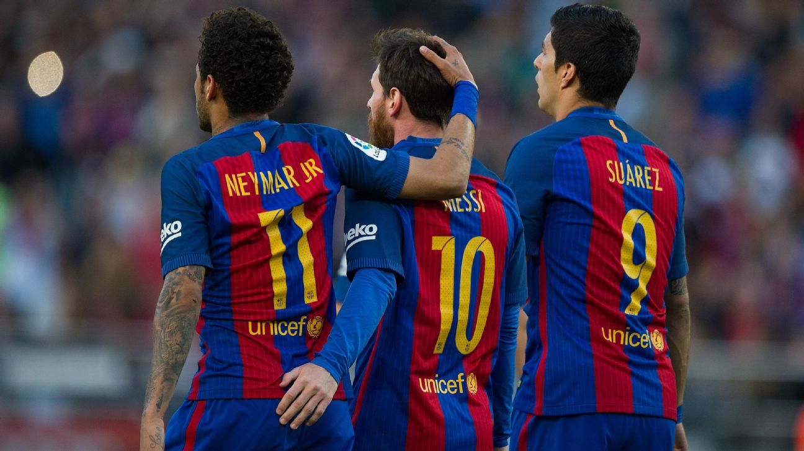
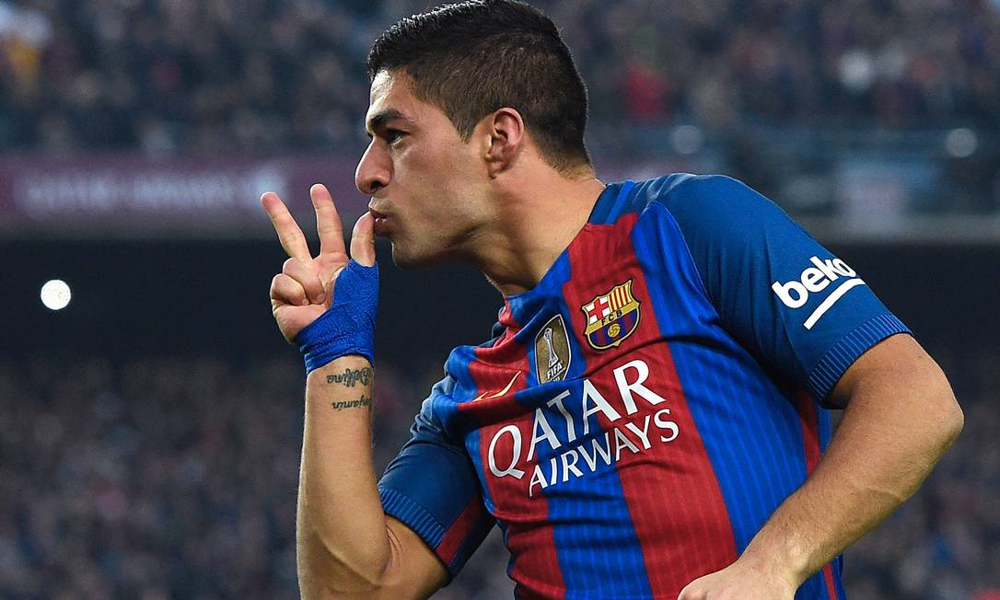
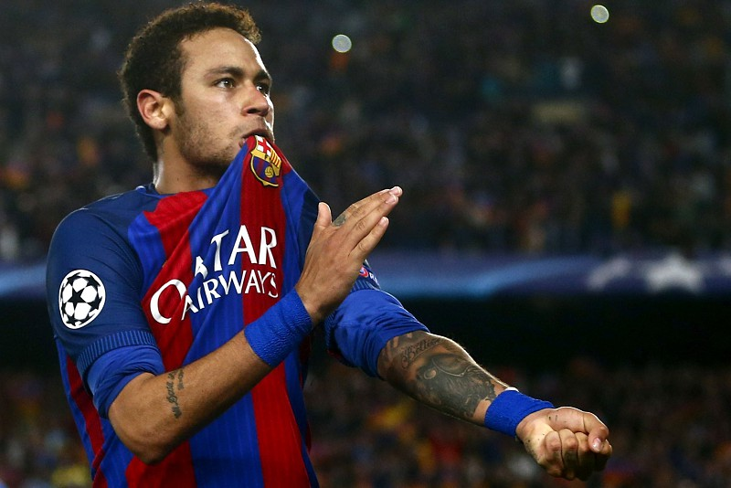

MSN
La Liga: 2014-2015, 2015-2016
Copa do Rei: 2014-2015, 2015-2016, 2016-2017
Supercopa da UEFA: 2015
Supercopa da Espanha: 2015, 2016
Mundial de Clubes da FIFA: 2015
Esses títulos refletem o sucesso extraordinário do trio "MSN" e sua contribuição para a equipe do Barcelona durante esse período. Eles foram uma parte vital do domínio do Barcelona tanto no cenário doméstico quanto no internacional.
Messi

Lionel Messi, cujo nome completo é Lionel Andrés Messi Cuccittini, é um jogador de futebol argentino nascido em 24 de junho de 1987 em Rosário, Argentina. Ele é amplamente reconhecido como um dos maiores jogadores de futebol de todos os tempos e é frequentemente referido como "Léo" ou "La Pulga" (A Pulga), devido à sua baixa estatura e agilidade no campo. Lionel Messi é amplamente considerado um dos jogadores mais condecorados e admirados do mundo do futebol, tendo ganhado inúmeros prêmios, incluindo várias Bolas de Ouro, que reconhecem o melhor jogador do mundo. Sua dedicação ao esporte e seu estilo de jogo único o tornaram um ícone do esporte globalmente.
Suárez
Luis Suárez, cujo nome completo é Luis Alberto Suárez Díaz, é um jogador de futebol uruguaio nascido em 24 de janeiro de 1987 em Salto, Uruguai. Ele é amplamente reconhecido por sua habilidade como atacante e por ser um dos jogadores mais prolíficos e polêmicos da sua geração. Suárez ganhou destaque jogando por clubes como o Ajax, Liverpool, FC Barcelona e, mais tarde, o Atlético de Madrid. Ele é conhecido por sua capacidade de finalização, movimentação inteligente no campo e habilidades de criação de jogadas. Sua energia e instinto agressivo dentro da área também são características marcantes do seu estilo de jogo.
Neymar
Neymar Jr., cujo nome completo é Neymar da Silva Santos Júnior, é um jogador de futebol brasileiro. Nascido em 5 de fevereiro de 1992 em Mogi das Cruzes, São Paulo, ele é amplamente reconhecido por suas habilidades técnicas excepcionais, velocidade, criatividade e dribles habilidosos. Neymar é considerado um dos jogadores mais talentosos e influentes da sua geração